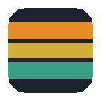

Colorize UI
指定ドメイン内の hostname に環境キーワードがあると、枠線とバナーで色分けします。
基本
環境ルール
上から順に判定します。hostname のラベル境界（ドット / ハイフン / アンダースコア）で
dev / stg などを検出します。

指定ドメイン内の hostname に環境キーワードがあると、枠線とバナーで色分けします。
上から順に判定します。hostname のラベル境界（ドット / ハイフン / アンダースコア）で
dev / stg などを検出します。